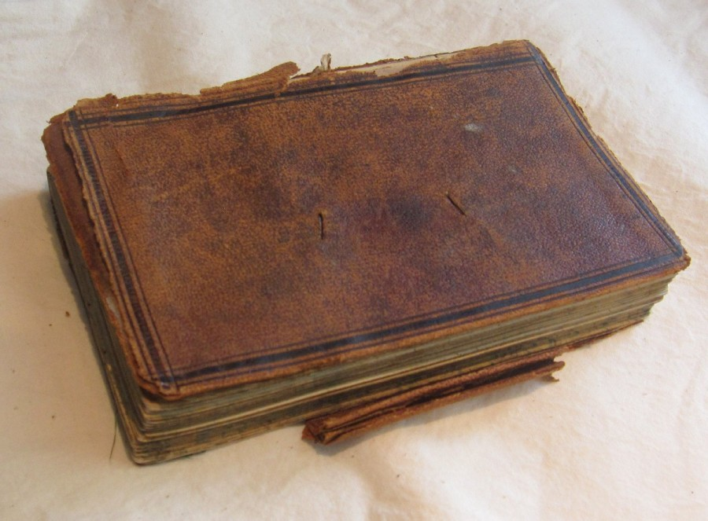

Click here to read more about the artifact

by Rice D. Montague Account Book
by Rice D. Montague.
| DC Element name |
Description |
| Title |
Rice D. Montague Account Book |
| Creator |
Rice D. Montague. |
| Subject |
Accounting. |
| Description |
It contains detailed financial records dating from about 1867 through about 1870 pertaining to his business, agricultural, and personal life. The full extent of the information is unknown due to the poor condition of the book. |
| Publisher |
Montgomery museum. |
| Contributor |
Montgomery Museum and Lewis Miller Regional Art Center. |
| Date |
1866. |
| Type |
Text. |
| Format |
Physical. |
| Identifier |
https://montgomerymuseum.org/support/vote-for-our-artifact. |
| Source |
https://montgomerymuseum.org/support/vote-for-our-artifact. |
| Language |
en-US. |
| Coverage |
United States. |
| Rights |
Montgomery Museum and Lewis Miller Regional Art Center. |
Rice D. Montague (1801-1877) was Montgomery County clerk of court from 1831 until 1858. He was a member of the House of Delegates from 1859-1861. Montague also had an active business life, manufacturing and bottling horse liniment made by his own recipe in a factory behind his house at 109 East Main Street by the 1870s. The sheepskin leather account book was an 1866(?) Christmas gift to Rice D. Montague from his son-in-law Judge George Junkin. It contains detailed financial records dating from about 1867 through about 1870 pertaining to his business, agricultural, and personal life. The full extent of the information is unknown due to the poor condition of the book. As one of the county’s preeminent nineteenth century citizens, the account book can help to illustrate this important man as well as business and daily life of the era.